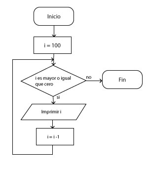
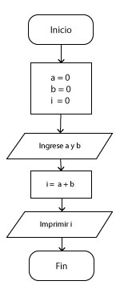
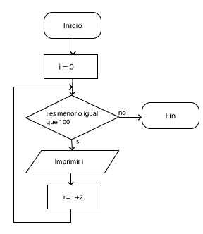
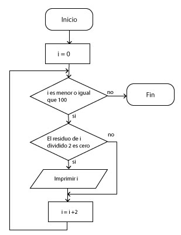
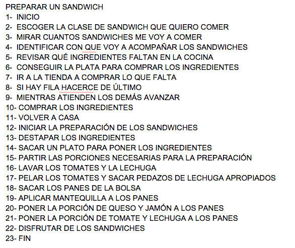
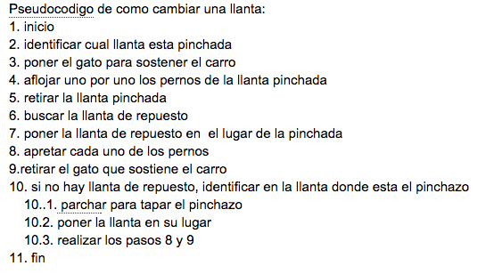
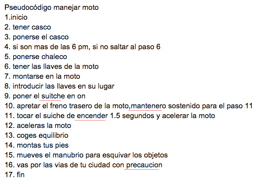
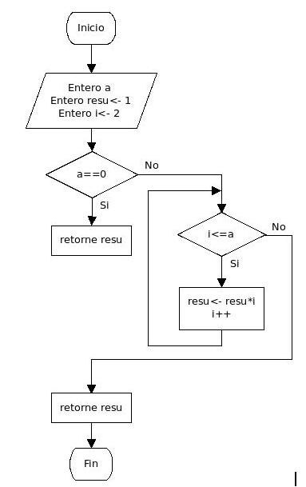
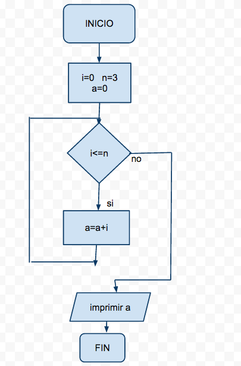
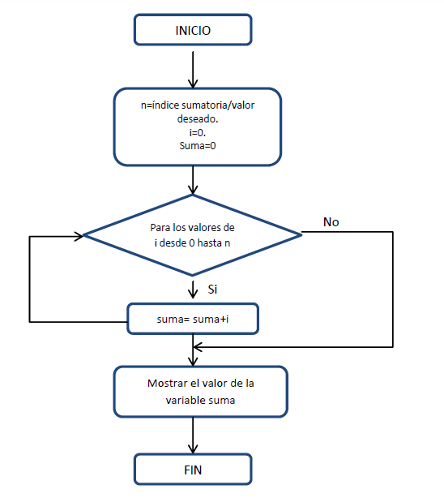

Taller estudio parcial #1
Taller de estudio para preparar el primer parcial, no es necesario entregarlo, ni se calificará. Se recomienda estudiarlo y leerlo completamente, para que conozca el tipo de preguntas que encontrará en el examen.
Taller de estudio - Pseudocodigo y diagramas de flujo
Primera parte, escriba el pseudocodigo y el diagrama de flujo, mínimo 30 pasos.
- Actividad sacar al perro a pasear
- Actividad montar en patines
- Actividad conseguir novia
- Actividad pedir un domicilio
- Actividad canción Salchipapa y rock and roll
- Actividad canción Atún con pan
- Actividad Batalla musical Scott Pilgrim Vs The World
Taller de estudio - Pseudocodigo y diagramas de flujo
- Calcular la suma de los primeros n números naturales
- Calcular el factorial de un número
- Imprimir en orden decrecientes, los números de m hasta n, donde m debe ser mayor a n.
- Pedir un número al usuario y responder si el número es primo.
- Imprimir los primeros n números primos
- Resolver la formula del estudiante, para valores que ingresa el usuario
Taller de estudio - Calcular el valor de la i
Prueba de escritorio, calcule el valor de la i. (Click en la imagen para agrandar)
Taller de estudio - Calcular el valor de la i
Taller de estudio - Calcular el valor de la i
Taller de estudio - Calcular el valor de la i
Taller de estudio - Prueba de escritorio
Validar el pseudocodigo, escribir el diagrama y realizar la prueba de escritorio
Taller de estudio - Prueba de escritorio
Taller de estudio - Prueba de escritorio
Taller de estudio - Prueba de escritorio
Taller de estudio - Prueba de escritorio
Taller de estudio - Prueba de escritorio
Taller de estudio - Teoría
- ¿Qué es una condición?
- ¿Qué es un operador de relación?
- ¿Qué es un operador binario?
- ¿Qué es un error en tiempo de lógica?
- ¿Qué es un error en tiempo de ejecución?
- ¿Por qué es importante la prioridad de ejecución en un algoritmo?
Sección especial, serie de fibonacci.

Realizar el pseudocodigo y el diagrama de flujo de los siguientes ejercicios.
- El usuario ingresa el termino que quiere calcular de la serie de fibonacci y el algoritmo lo resuelve.
- Algoritmo que imprime la suma de los primeros n valores de la serie de fibonacci.
- Algoritmo que imprime los números en orden decreciente de la serie de fibonacci.
- Algoritmo que multiplica los números de fibonacci.